吐槽
作为一个 Android developer，没有什么比拿着 UI 设计的一堆 iOS 风格的设计 来做需求更恶心的了，基本所有空间都要照着 iOS 来画一遍，Material Design 辣么酷炫 为什么 UI在设计的阶段不设计成 Material Design风格呢？
今天试了几个比较Support包中比较典型的Material Design控件，后期会在学习下Material Design的设计思想和理念，希望能拉着 UI 做一次Material Design 分享，改变我们 APP 的 iOS 风格啊。
最终效果如下
Android Design Support 库依赖
在 build.gradle 中加入support 包
compile 'com.android.support:appcompat-v7:23.1.1'
Design Support Library 中包含了 Support v4 和 AppCompat v7
Floating Action Button
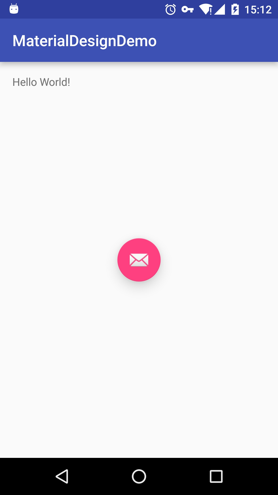
我们希望FloatingActionButton悬浮在页面的右下方，所以我们父节点应使用Flowlayout
<?xml version="1.0" encoding="utf-8"?>
<FrameLayout xmlns:android="http://schemas.android.com/apk/res/android"
xmlns:tools="http://schemas.android.com/tools"
android:layout_width="match_parent"
android:layout_height="match_parent"
android:paddingBottom="@dimen/activity_vertical_margin"
android:paddingLeft="@dimen/activity_horizontal_margin"
android:paddingRight="@dimen/activity_horizontal_margin"
android:paddingTop="@dimen/activity_vertical_margin"
tools:context="io.github.xuyushi.materialdesigndemo.MainActivity">
<TextView
android:layout_width="wrap_content"
android:layout_height="wrap_content"
android:text="Hello World!" />
<android.support.design.widget.FloatingActionButton
android:layout_width="wrap_content"
android:layout_height="wrap_content"
android:layout_gravity="bottom|end"
android:src="@android:drawable/ic_dialog_email" />
</FrameLayout>
和普通 button 一样可以设置其点击事件
private void initFb() {
mFb = (FloatingActionButton) findViewById(R.id.fb);
mFb.setOnClickListener(new View.OnClickListener() {
@Override
public void onClick(View v) {
Toast.makeText(MainActivity.this, "fb predsed ", Toast.LENGTH_SHORT).show();
}
});
}
Android:elevation属性为 view 在空闲状态下的阴影深度， 需要在 api 21以上才能使用，使用 support 包可以使用app:elevation 来表示空闲状态高度，app:pressedTanslationZ为按下状态的高度
按钮的颜色一般为主题的强调色，也可以使用 ”app:backgroundTint“修改
Snackbar
和 Toast 很像，snackbar 可以展示一段简单的信息，不同点是它的展示更像是整体 UI 的一部分，不是想 toast 一样是浮在 UI 上的，并且可以有简单的交互
在点击 floatingActionButton时显示Snackbar
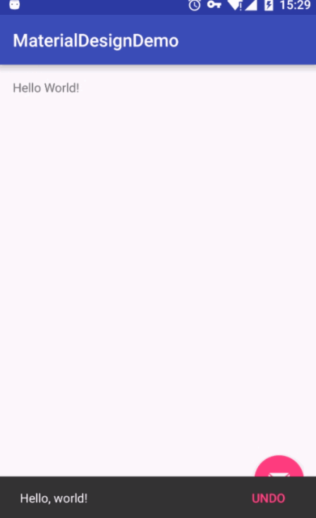
但是可以看到，Snackbar 遮挡住了我们的 view，这时候需要一个CoordinatorLayout来协调 view 布局
CoordinatorLayout
将父布局中的framelaout换成CoordinatorLayout，其他不变，再来看看效果
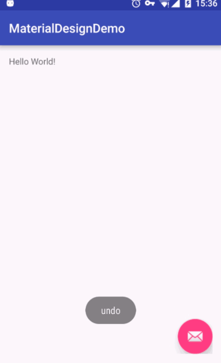
todo CoordinatorLayout学习
Toolbar
Toolbar 比传统的 ActionBar 更灵活，功能也更多，我们可以看到现在市面上很多的 APP 已经用 Toolbar 替代了 actionbar，在 Desgin Support 的组件中，很多设计都可以和 Toolbar 协同工作，而不是和 actionbar，所以还是建议使用新的 toolbar 替换以前的 actionbar
替换步骤
1、在 minifest 中，将 activity 的 apptheme 的 style 中的 actionbar属性去掉
<style name="AppTheme.NoActionBar">
<item name="windowActionBar">false</item>
<item name="windowNoTitle">true</item>
</style>
<activity android:name=".MainActivity">
<intent-filter>
<action android:name="android.intent.action.MAIN" />
<category android:name="android.intent.category.LAUNCHER" />
</intent-filter>
</activity>
- 在 fb 之前放入 Toolbar 组件
<android.support.design.widget.CoordinatorLayout
.........
<android.support.v7.widget.Toolbar
android:id="@+id/toolbar"
android:layout_width="match_parent"
android:layout_height="?attr/actionBarSize"
android:background="?attr/colorPrimary"
app:popupTheme="@style/ThemeOverlay.AppCompat.Light"
app:theme="@style/ThemeOverlay.AppCompat.Dark.ActionBar" />
<TextView
android:layout_width="wrap_content"
android:layout_height="wrap_content"
android:text="Hello World!" />
<android.support.design.widget.FloatingActionButton
android:id="@+id/fb"
android:layout_width="wrap_content"
android:layout_height="wrap_content"
android:layout_gravity="end|bottom"
android:src="@android:drawable/ic_dialog_email"
app:elevation="12dp"
app:pressedTranslationZ="30dp"
/>
</android.support.design.widget.CoordinatorLayout>
- 通知系统使用 toolbar
private void initToolbar() {
mToolbar = (Toolbar) findViewById(R.id.toolbar);
setSupportActionBar(mToolbar);
}
CoordinatorLayout中的 view 必须是能一同协作的 view，就像 Snackbar 一样，但是 toolbar 并不是这样能协同作战的 view，所以我们需要用一个可以协同作战的 view 来包裹上Toolbar，这就是 AppBarLayout
现在我们的布局文件结构是这样的
<android.support.design.widget.CoordinatorLayout
...>
<android.support.design.widget.AppBarLayout
android:layout_width="match_parent"
android:layout_height="wrap_content">
<android.support.v7.widget.Toolbar
.../>
</android.support.design.widget.AppBarLayout>
<android.support.design.widget.FloatingActionButton
...>
</android.support.design.widget.FloatingActionButton>
</android.support.design.widget.CoordinatorLayout>
注意
根据官方的谷歌文档，AppBarLayout目前必须是第一个嵌套在CoordinatorLayout里面的子view
在 toolbar 中加入属性，app:layout_collapseMode="pin"，使得 Toolbar 中的按钮能固定在顶部
在布局中加入内容
在布局中尝试加入一些按钮
....
</android.support.design.widget.AppBarLayout>
<LinearLayout
android:layout_width="match_parent"
android:layout_height="match_parent"
app:layout_behavior="@string/appbar_scrolling_view_behavior"
android:orientation="vertical">
<Button
android:layout_width="wrap_content"
android:layout_height="wrap_content"
android:text="test" />
<Button
android:layout_width="wrap_content"
android:layout_height="wrap_content"
android:text="test" />
<Button
android:layout_width="wrap_content"
android:layout_height="wrap_content"
android:text="test" />
</LinearLayout>
...
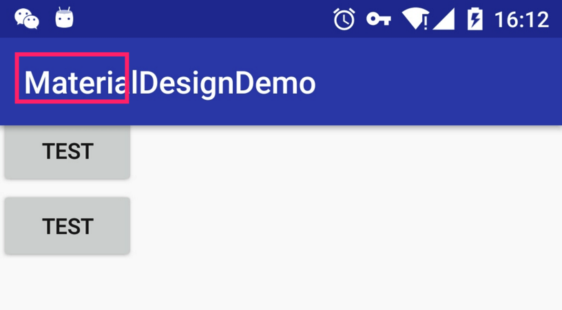
我们定义三个按键，却被 toolbar 遮住了一个，原因是LinearLayout并没有被设计成在CoordinatorLayout协同工作的模式，为了使他们能在CoordinatorLayout协同工作，我们需要在LinearLayout加上一条属性，来告诉它的滚动属性（）
<LinearLayout
...
app:layout_behavior="@string/appbar_scrolling_view_behavior"
...
>
搞定
TabLayout
根据官网的知道，TabLayout通常应该是放在顶部，（iOS 的 tab 好像基本在底部），
他应该在阴影部分上面，所以应该放在AppBarlayout中
<android.support.design.widget.AppBarLayout ...>
<android.support.v7.widget.Toolbar ... />
<android.support.design.widget.TabLayout
android:id="@+id/tabLayout"
android:layout_width="match_parent"
android:layout_height="wrap_content"/>
</android.support.design.widget.AppBarLayout>
java 中设置这些 tab 属性
private void initTableLayout() {
mTabLayout = (TabLayout) findViewById(R.id.tabLayout);
mTabLayout.addTab(mTabLayout.newTab().setText("Tab 1"));
mTabLayout.addTab(mTabLayout.newTab().setText("Tab 2"));
mTabLayout.addTab(mTabLayout.newTab().setText("Tab 3"));
}
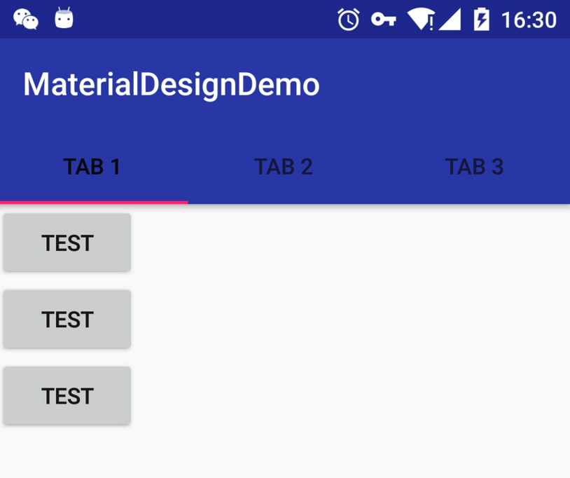
背景会设置为主题色，导航线是强调色。但是字还是黑色的，因为我们没有为 tablayout 定义主题，
<android.support.design.widget.TabLayout
...
app:theme="@style/ThemeOverlay.AppCompat.Dark.ActionBar" />
通常 tablayout 会和ViewPager一起使用 ，这时候使用
public void setupWithViewPager (ViewPager viewPager)
一张图看的比较清晰
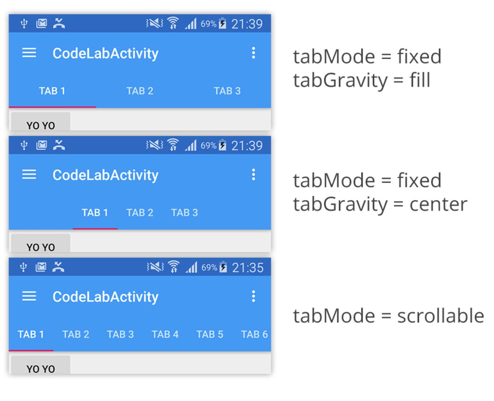
内容滚动时，AppBarLayout隐藏
当滑档内容时，为了腾出跟多的空间展示内容可以将AppBarLayout隐藏
1.用 scrollView 包裹 LinearLayout,记得加上 app:layout_behavior属性
<ScrollView
android:layout_width="match_parent"
android:layout_height="match_parent"
android:fillViewport="true"
app:layout_behavior="@string/appbar_scrolling_view_behavior"
>
<LinearLayout
android:layout_width="match_parent"
android:layout_height="match_parent"
android:orientation="vertical"
>
...
</LinearLayout>
</ScrollView>
- Toolbar 加上属性
<android.support.v7.widget.Toolbar
...
app:layout_scrollFlags="scroll|enterAlways" />
- scrollView 也不能喝 CoordinatorLayout 协同工作，同上面一样，要用别的 view 包裹或者直接使用 NestedSrollView替换scrollView
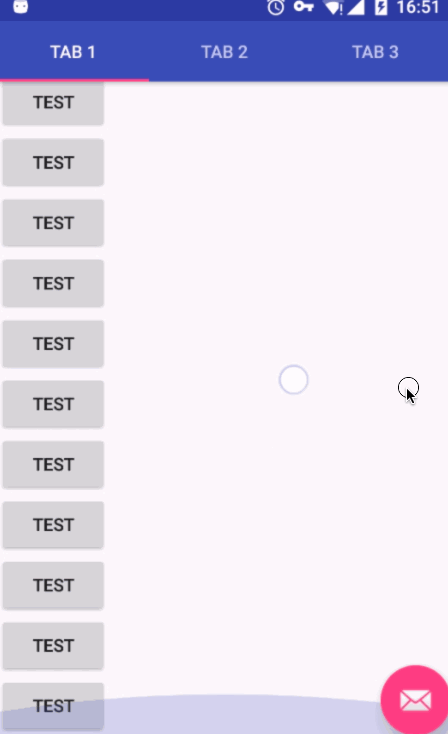
如果希望 tablayout 也消失，只需要和 tablayout 加上相同的属性就行了
<android.support.design.widget.TabLayout
...
app:layout_scrollFlags="scroll|enterAlways" />
滑动内容 和 AppBarLayout是如何进行联系的？
我们需要定义AppBarLayout与滚动视图之间的联系。在RecyclerView或者任意支持嵌套滚动的view比如NestedScrollView上添加app:layout_behavior。support library包含了一个特殊的字符串资源@string/appbar_scrolling_view_behavior，它和AppBarLayout.ScrollingViewBehavior相匹配，用来通知AppBarLayout 这个特殊的view何时发生了滚动事件，这个behavior需要设置在触发事件（滚动）的view之上
当CoordinatorLayout发现scrollView中定义了这个属性，它会搜索自己所包含的其他view，看看是否有view与这个behavior相关联。AppBarLayout.ScrollingViewBehavior描述了RecyclerView与AppBarLayout之间的依赖关系。RecyclerView的任意滚动事件都将触发AppBarLayout或者AppBarLayout里面view的改变。
AppBarLayout里面定义的view只要设置了app:layout_scrollFlags属性，就可以在RecyclerView滚动事件发生的时候被触发：
app:layout_scrollFlags属性里面必须至少启用scroll这个flag，这样这个view才会滚动出屏幕，否则它将一直固定在顶部。可以使用的其他flag有：
- enterAlways: 一旦向上滚动这个view就可见。
- enterAlwaysCollapsed: 顾名思义，这个flag定义的是何时进入（已经消失之后何时再次显示）。假设你定义了一个最小高度（minHeight）同时enterAlways也定义了，那么view将在到达这个最小高度的时候开始显示，并且从这个时候开始慢慢展开，当滚动到顶部的时候展开完。
- exitUntilCollapsed: 同样顾名思义，这个flag时定义何时退出，当你定义了一个minHeight，这个view将在滚动到达这个最小高度的时候消失。
记住，要把带有scroll flag的view放在前面，这样收回的view才能让正常退出，而固定的view继续留在顶部。
可折叠的 Toolbar
- 用 CollapsingToolbarLayout 包裹 Toolbar，但仍然在 AppBarLayout 中
- 删除 Toolbar 中的 layout_scrollFlags
- 为 CollapsingToolbarLayout 声明 layout_scrollFlags，并且将 layout_scrollFlags 设置成 scroll|exitUntilCollapsed
<android.support.design.widget.AppBarLayout
android:layout_width="match_parent"
android:layout_height="256dp">
<android.support.design.widget.CollapsingToolbarLayout
android:id="@+id/collapsingToolbarLayout"
android:layout_width="match_parent"
android:layout_height="match_parent"
app:layout_scrollFlags="scroll|exitUntilCollapsed">
<android.support.v7.widget.Toolbar
android:id="@+id/toolbar"
android:layout_width="match_parent"
android:layout_height="?attr/actionBarSize"
android:background="?attr/colorPrimary"
android:minHeight="?attr/actionBarSize"
app:theme="@style/ThemeOverlay.AppCompat.Dark.ActionBar"
app:popupTheme="@style/ThemeOverlay.AppCompat.Light"
app:layout_collapseMode="pin"/>
</android.support.design.widget.CollapsingToolbarLayout>
</android.support.design.widget.AppBarLayout>
注意 CollapsingToolbarLayout 的高度是android:layout_height="match_parent"
CollapsingToolbarLayout在展开和收缩时，标题的文字会自动过度的，可以通过 app:expandedTitleMargin 等来改变文字位置
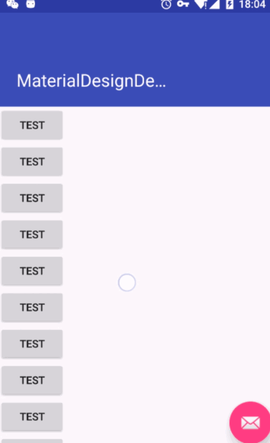
为 appBar 添加背景图片
由于 CollapsingToolbarLayout 是继承 Framelayout 的，所以我们可以直接添加一个 ImageView 作为背景图片
<ImageView
android:layout_width="match_parent"
android:layout_height="match_parent"
android:scaleType="centerCrop"
android:src="@drawable/header" />
<android.support.v7.widget.Toolbar
...
此时虽然背景已经出来了，但是蓝色的导航条依旧存在，需要在 toolbar 去掉这条属性
android:background="?attr/colorPrimary"
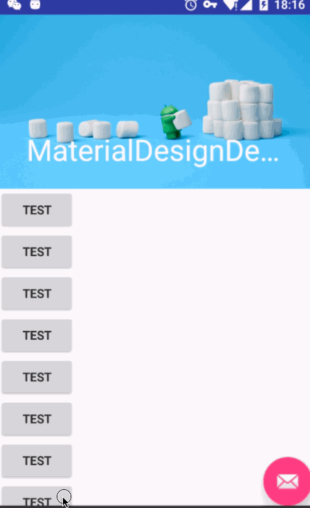
给 Imageview 加上视差模式会更帅
app:layout_collapseMode="parallax"
app:layout_collapseParallaxMultiplier="0.5"
也可以在最后恢复成主题色
<android.support.design.widget.CollapsingToolbarLayout
...
app:contentScrim="?attr/colorPrimary">
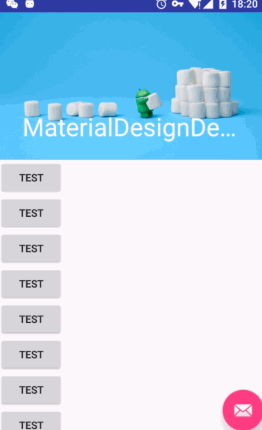
Navigation Drawer
在AppBarLayout布局下，增DrawerLayout
<android.support.design.widget.AppBarLayout>
...
<android.support.v4.widget.DrawerLayout xmlns:app="http://schemas.android.com/apk/res-auto"
xmlns:tools="http://schemas.android.com/tools"
android:id="@+id/drawer_layout"
android:layout_width="match_parent"
android:layout_height="match_parent"
android:fitsSystemWindows="true"
app:layout_behavior="@string/appbar_scrolling_view_behavior"
tools:openDrawer="start">
<include layout="@layout/content_main" />
<android.support.design.widget.NavigationView
android:id="@+id/nav_view"
android:layout_width="wrap_content"
android:layout_height="match_parent"
android:layout_gravity="start"
android:fitsSystemWindows="true"
app:headerLayout="@layout/nav_header_main2"
app:menu="@menu/activity_main2_drawer" />
</android.support.v4.widget.DrawerLayout>
DrawerLayout中分两部分组成，一部分是content 就是我们需要的主布局内容，另一部分是我们的抽屉的布局，NavigationView中有顶部头，和标签
app:headerLayout="@layout/nav_header_main2"
app:menu="@menu/activity_main2_drawer"
创建菜单。
菜单元素是放在group标签之下，同时声明每次只能有一个item被选中：
<?xml version="1.0" encoding="utf-8"?>
<menu xmlns:android="http://schemas.android.com/apk/res/android">
<group android:checkableBehavior="single">
<item
android:id="@+id/nav_camera"
android:icon="@drawable/ic_menu_camera"
android:title="Import" />
<item
android:id="@+id/nav_gallery"
android:icon="@drawable/ic_menu_gallery"
android:title="Gallery" />
<item
android:id="@+id/nav_slideshow"
android:icon="@drawable/ic_menu_slideshow"
android:title="Slideshow" />
<item
android:id="@+id/nav_manage"
android:icon="@drawable/ic_menu_manage"
android:title="Tools" />
</group>
<item android:title="Communicate">
<menu>
<item
android:id="@+id/nav_share"
android:icon="@drawable/ic_menu_share"
android:title="Share" />
<item
android:id="@+id/nav_send"
android:icon="@drawable/ic_menu_send"
android:title="Send" />
</menu>
</item>
</menu>
为了防止页面被遮盖，同样要使得 DrawerLayout协调。加入app:layout_behavior="@string/appbar_scrolling_view_behavior"属性
java初始化
private void initDraw() {
DrawerLayout drawer = (DrawerLayout) findViewById(R.id.drawer_layout);
ActionBarDrawerToggle toggle = new ActionBarDrawerToggle(
this, drawer, mToolbar, R.string.navigation_drawer_open, R.string.navigation_drawer_close);
drawer.setDrawerListener(toggle);
toggle.syncState();
NavigationView navigationView = (NavigationView) findViewById(R.id.nav_view);
navigationView.setNavigationItemSelectedListener(new NavigationView.OnNavigationItemSelectedListener() {
@Override
public boolean onNavigationItemSelected(MenuItem item) {
// Handle navigation view item clicks here.
int id = item.getItemId();
if (id == R.id.nav_camera) {
// Handle the camera action
} else if (id == R.id.nav_gallery) {
} else if (id == R.id.nav_slideshow) {
} else if (id == R.id.nav_manage) {
} else if (id == R.id.nav_share) {
} else if (id == R.id.nav_send) {
}
DrawerLayout drawer = (DrawerLayout) findViewById(R.id.drawer_layout);
drawer.closeDrawer(GravityCompat.START);
return true;
}
});
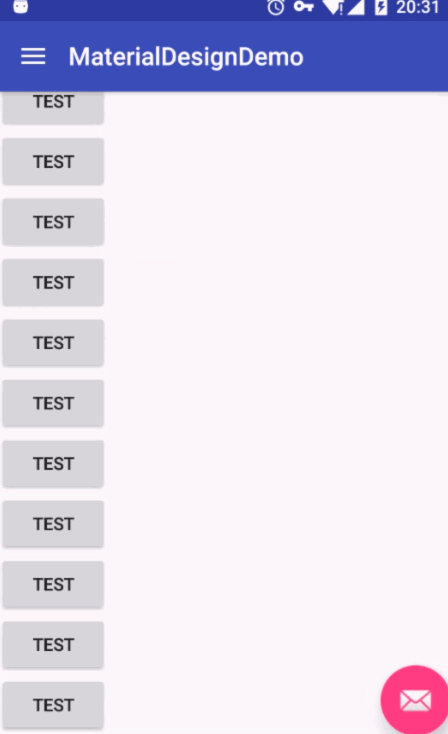
SwipeRefreshLayout
在NestedScrollView外在包裹一层SwipeRefreshLayout，
<android.support.v4.widget.SwipeRefreshLayout
android:id="@+id/refresh"
android:layout_width="match_parent"
android:layout_height="match_parent"
app:layout_behavior="@string/appbar_scrolling_view_behavior">
<android.support.v4.widget.NestedScrollView
android:layout_width="match_parent"
android:layout_height="match_parent"
android:fillViewport="true"
>
.....
</android.support.v4.widget.NestedScrollView>
</android.support.v4.widget.SwipeRefreshLayout>
初始化监听器
private void initRefresh() {
mSwipeRefreshLayout = (SwipeRefreshLayout) findViewById(R.id.refresh);
mSwipeRefreshLayout.setOnRefreshListener(new SwipeRefreshLayout.OnRefreshListener() {
@Override
public void onRefresh() {
refreshContent();
}
});
}
private void refreshContent() {
new Handler().postDelayed(new Runnable() {
@Override
public void run() {
mSwipeRefreshLayout.setRefreshing(false);
}
}, 2000);
}
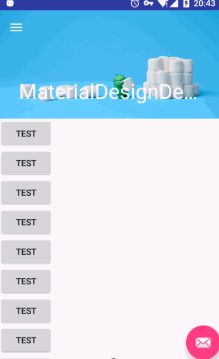
参考
http://inthecheesefactory.com/blog/android-design-support-library-codelab/en
http://www.jcodecraeer.com/a/anzhuokaifa/androidkaifa/2015/0717/3196.html
http://www.jcodecraeer.com/a/anzhuokaifa/androidkaifa/2015/0608/3011.html
http://developer.android.com/design/material/